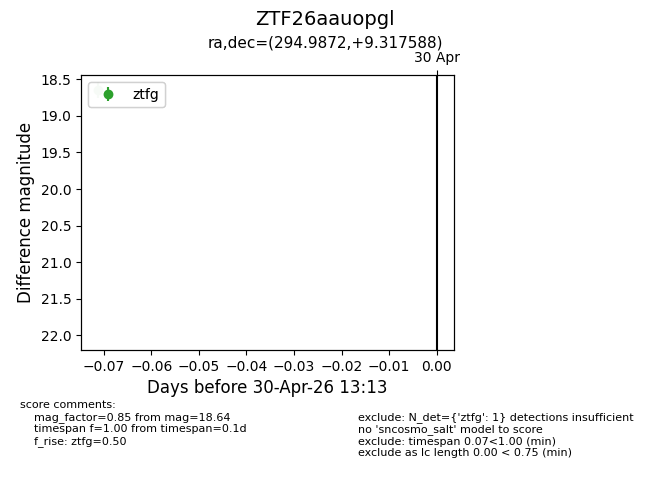
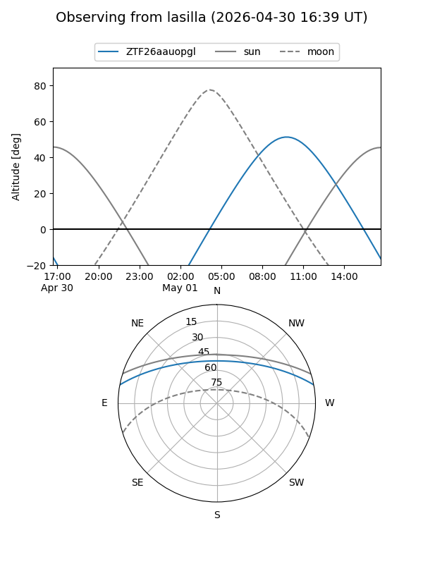
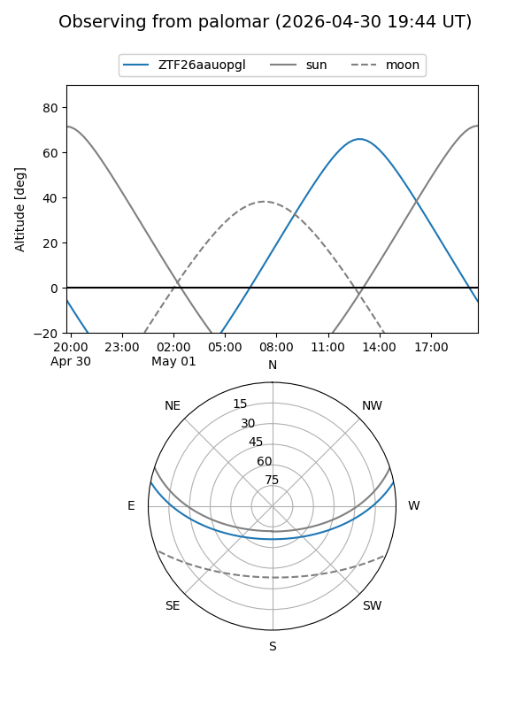
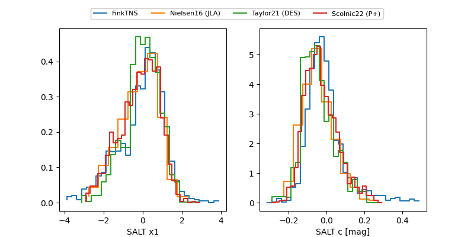

ZTF26aauopgl
Target ZTF26aauopgl at 2026-04-30 13:19
Aliases and brokers:
FINK: link
Lasair: link
ALeRCE: link
alt names
ZTF26aauopgl (ztf,fink_ztf)
Coordinates:
equatorial (ra, dec) = 294.9872,+9.31759
equatorial (HMS+DMS) = 19:39:56.94,+09:19:03.32
galactic (l, b) = (46.8247,-6.35484)
Flags:
Photometry:
last ztfg=18.64
1 ztfg detections
Lightcurve

Visibility


Additional plots
